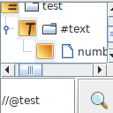
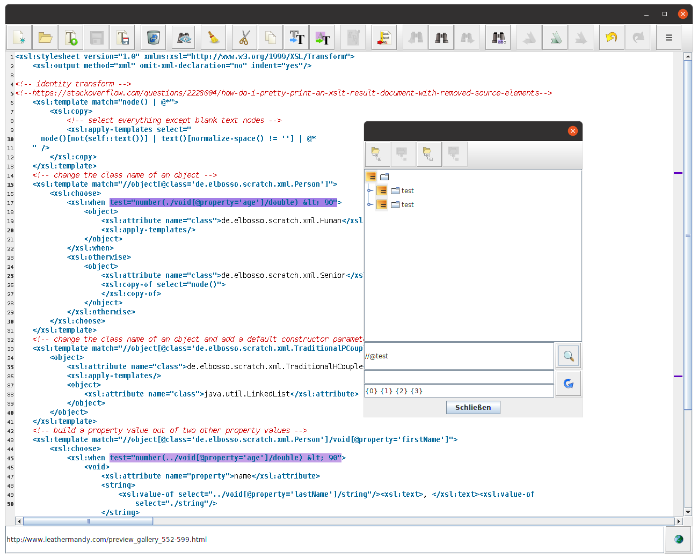

Bessere XPath-Suche im XML-Editor

Updates
Ich habe den unter anderem im XPathLab eingesetzten Editor für XML-Dokumente um neue Funktionalitäten erweitert
Diese neue Variante der Komponente zum Editieren von XML-Dokumenten kommt nicht nur im XPathLab, sondern zum Beispiel auch in der neuen Version der sQLshell zum Einsatz. Bisher war die Suche darauf beschränkt, nach XPath-Ausdrücken zu suchen und die Resultate in einer separaten Baumansicht darzustellen.
Dieser Modus war unbefriedigend, da es natürlich schöner wäre, die Fundstellen direkt im Editor hervorzuheben. Daher wurde geplant, bei Klick auf einen der Knoten in der Baumansicht das entsprechende Fragment im Editor zu selektieren und automatisch an die entsprechende Stelle zu springen, sodass das Fragmentim Viewport sichtbar wird.
Weiterhin sollten alle gefundenen Stellen mit einer entsprechende Farbe im Editor hervorgehoben dargestellt werden und - wie bereits von anderen Suchfunktionalitäten (die natürlich weiterhin auch im XML-Editor verfügbar sind) bekannt - im Markerbereicht rechts des eigentlichen Editors hervorgehoben werden. Bei Klick in den Markerbereich springt der Viewport wie gehabt an die entsprechende Position.
Der Suchbegriff bleibt dynamisch - wenn am Text weitergearbeitet wird und durch diese Arbeit neue Suchtreffer entstehen, werden diese ebanfalls sofort markiert und tauchen ebenfalls im Baum mit den Suchtreffern auf.
Darüber hinaus wird die Korrektheit des XML-Dokuments online nach jeder Änderung geprüft und eventuell vorhandene Fehler visuell hervorgehoben - wird die Maus über diese Markierung bewegt, ist der Fehlertext im Tooltip ablesbar.
Ein Beispiel für die neue Komponente bei der Arbeit ist hier zu sehen:

XML-Editor mit geöffnetem Dialog zur Suche nach XPath-AusdrückenEinige Implementierungsdetails seien hier noch erwähnt: XPath-Suche funktioniert in Java prinzipiell auf DOM-Bäumen. In der Vergangeheit gab es zwei Möglichkeiten, XML in Java zu parsen: DOM und SAX. DOM-Parsen erstellt einen für die Suche mit XPath-Ausdrücken benötigten DOM-Baum - enthält aber keine Informationen über die Positionen des jeweiligen Elements oder Attributes im Text. Mit SAX ist es möglich, diese Informationen zu erlangen - man muss sie aber über eine entsprechende Implementierung des Locator-Interface selbst speichern - und es entsteht daraus kein DOM-Baum.
Ich suchte bei der Implementierung, ob eventuell irgendwo bereits eine Implementierung existierte, die beides - Dom-Nodes und ihre Positionen im Text gleichzeitig zugreifbar macht. Ich stieß bei dieser Suche auf ein Projekt, das die neueste Variante des XML-Parsens in Java benutzte: STAX. Damit wurde ein DOM-Baum aufgebaut und STAX selbst liefert entsprechende Location-Informationen für die einzelnen Nodes. Der StaxDomConverter merkte sich diese Locations noch nicht, aber ich konnte ihn entsprechend erweitern, da mir die im Projekt verwendete BSD-Lizenz dafür den benötigten Spielraum einräumte.
Dabei lernte ich noch etwas Wichtiges: Ich war zu diesem Zeitpunkt noch mit Java in der Version 11 unterwegs (ich weiß, ich weiß...). Der dort verfügbare STAX-Parser liefert falsche Location-Informationen, weswegen ich den aalto-Parser einsetzte. Dieser ist also auch eine Voraussetzung für die Benutzung der Komponente: Die mitgelieferte Komponente zeigte mit der Location-Informationen immer auf das Ende eines Elements - im Falle eines Start-Element-Events also auf das schließende ">" des Tagnamens während die aalto-Implementierung wie von mir erwartet auf das öffnende "<" zeigt.
Aktualisierung vom 14. September 2022


Vor 5 Jahren hier im Blog
-
Warum Blockchain?
09.03.2019
Vorsicht: Gleich zu Beginn eine Triggerwarnung: Dieser Artikel enthält Meinungen vermischt mit Fakten und am Ende des Lesens erfährt der Lesende keine letztgültige Wahrheit sondern (wenn überhaupt) nur neue Ideen. Mir gehts hier darum, dass meiner Ansicht nach falsche Erwartungen mit dem ganzen Blockchain-Hype geweckt werden.
Weiterlesen...
Tags
Android Basteln C und C++ Chaos Datenbanken Docker dWb+ ESP Wifi Garten Geo Git(lab|hub) Go GUI Gui Hardware Java Jupyter Komponenten Links Linux Markdown Markup Music Numerik PKI-X.509-CA Python QBrowser Rants Raspi Revisited Security Software-Test sQLshell TeleGrafana Verschiedenes Video Virtualisierung Windows Upcoming...
Neueste Artikel
- Minimierung von Angriffsoberflächen in Java
Ich habe in einem früheren Artikel darauf hingewiesen, dass Java (17) und Python (3.10) sich bei der Validierung von x509-Zertifikaten ein wenig unterscheiden. Einer der Unterschiede ist die Schwelle, ab der Schlüssel wegen zu geringer Länge als unsicher bewertet und die damit verbundenen Zertifikate abgelehnt werden.
Weiterlesen... - Gleichseitige Dreiecke mit abgerundeten Ecken für Java
Ich habe - nach einer Inspiration aus dem Internet - wieder einmal eine neue Graphic-Primitive für Javas Graphics2D erstellt
Weiterlesen... - Victor Borge
Ladies and Gentlemen - Victor Borge!
Weiterlesen...
Manche nennen es Blog, manche Web-Seite - ich schreibe hier hin und wieder über meine Erlebnisse, Rückschläge und Erleuchtungen bei meinen Hobbies.
Wer daran teilhaben und eventuell sogar davon profitieren möchte, muß damit leben, daß ich hin und wieder kleine Ausflüge in Bereiche mache, die nichts mit IT, Administration oder Softwareentwicklung zu tun haben.
Ich wünsche allen Lesern viel Spaß und hin und wieder einen kleinen AHA!-Effekt...
PS: Meine öffentlichen GitHub-Repositories findet man hier - meine öffentlichen GitLab-Repositories finden sich dagegen hier.